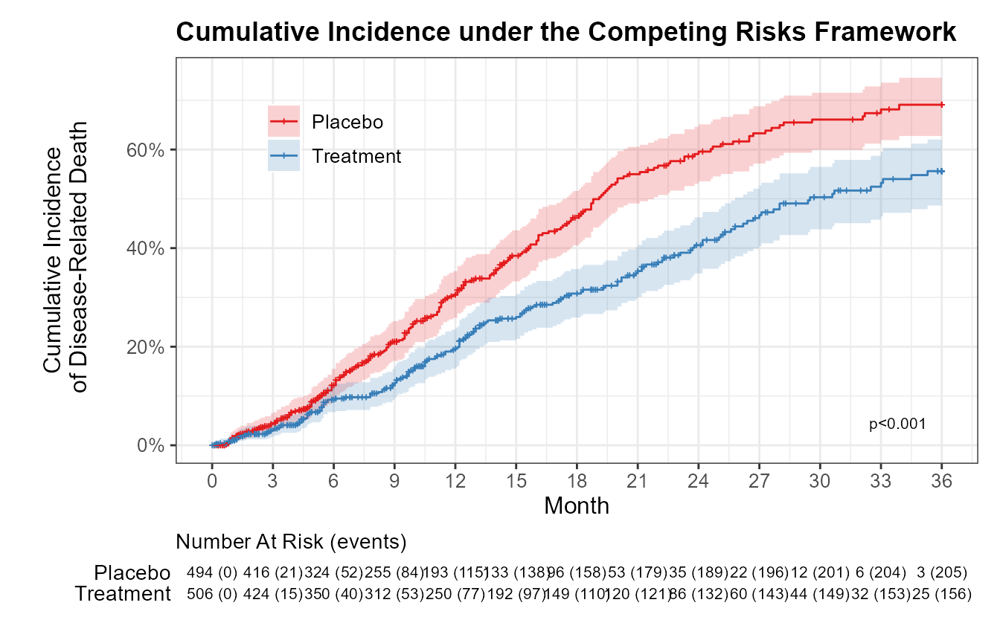

library(tidyverse)
library(tidycmprsk)
library(ggsurvfit)9 竞争事件当作删失处理？你可能一直在高估结局事件的发生率
竞争风险（competing risk），简单来说就是当某一类事件发生后，我们所关心的结局事件就没有机会再出现。举例来说，如果研究关注的结局事件是心血管死亡，那么因癌症等非心血管原因导致的死亡就是竞争事件。患者一旦死于癌症，心血管死亡就不可能再出现，这就是竞争风险。那么，在有竞争风险的情况下，我们做生存分析能否将竞争事件按删失处理呢？
9.1 把竞争事件当成删失来处理，会带来什么问题？
生存数据的一个显著特征是”删失”（censoring）概念。删失定义中隐含的一个概念是：如果研究时间延长或没有患者退出研究，那么对所有患者而言，最终都会观察到所关注的结局事件。生存分析的常规统计方法基于一个重要的假设，即独立或非信息性删失。其含义是：在给定时间点上，仍处于随访中的患者与删失的患者，未来发生结局事件的风险相同。
在分析竞争风险数据时，研究者可能会在竞争事件发生时对患者进行删失处理。例如以心血管死亡为结局事件时，研究者在患者死于非心血管原因时将其视为删失。这样做可能带来的问题是：
- 违反非信息性删失的假设。这样做等于是将死于非心血管原因的患者由仍然存活且尚未死于任何原因的患者来代表，显然是不合理的；
- 即使竞争事件相互独立，在竞争事件发生时对患者进行删失也可能导致错误的结论。因为删失其实是假定了竞争事件不可能发生，在心血管死亡这个例子中，相当于是假定非心血管原因死亡不可能发生；
- 当我们将竞争事件视为删失时，通常会高估结局事件的发生率。一项心衰人群研究中，Kaplan‑Meier估算的5年心血管死亡率为43%；而校正竞争风险后，真实累积发生率仅36.8%，高估幅度达到6.2%1。
9.2 Fine‑Gray亚分布风险模型
分析竞争风险数据应使用累积发生率函数（Cumulative Incidence Function, CIF）和Fine‑Gray亚分布风险模型（subdistribution hazard model）。亚分布风险模型由Fine和Gray于1999年提出2，也称为CIF回归模型。
累积发生率函数（CIF）用于在考虑竞争事件的情况下估计结局事件的发生率，通常采用Aalen-Johansen方法进行非参数估计。当需要比较两组间累积发生率的差异时，采用Gray检验（Gray’s test）。
Fine‑Gray亚分布风险模型在考虑竞争事件的前提下，对协变量作用于主要结局事件发生率的效应进行建模，因而特别适用于在有竞争风险的情况下进行风险预测。
9.3 为什么使用tidycmprsk包来绘制累积发生率曲线？
在竞争风险分析领域，cmprsk包是经典的、应用最广泛的工具之一，文献引用量高，期刊认可度好。它的局限在于输出格式不够友好、可视化薄弱。
tidycmprsk是由Daniel D. Sjoberg等人开发的R包，专注于竞争风险分析（Competing Risks Analysis），采用tidyverse风格设计。它本质上是cmprsk的tidyverse风格封装，在保持核心算法不变的基础上，实现了结构化的输出，显著提升了可视化效果。
riskRegression包是另一个功能强大的工具，可覆盖竞争风险模型从建模、预测到模型验证与评价的全流程，在竞争风险预测模型研究领域应用广泛，但学习门槛相对较高。
相比之下，对于绘制累积发生率曲线而言，tidycmprsk是更优的选择。
9.4 竞争风险框架下的累积发生率曲线实例
下面我们通过一个实例来看一下如何使用R的tidycmprsk包来绘制竞争风险框架下的累积发生率曲线。
首先加载必要的包：
本例使用的模拟数据如Table 9.1所示。数据集共包含1000个样本、10个变量。结局状态（status）包括删失（censored）、疾病相关死亡（Death from disease，结局事件）和非疾病相关死亡（Death from other causes，竞争事件）；协变量包括性别（sex）、年龄分组（age_group）、疾病阶段（stage）、细胞遗传学风险（cytogenetic_risk）和 ECOG 评分（ecog_score），均为分类变量。
| id | month | status | group | sex | age_group | race | stage | cytogenetic_risk | ecog_score |
|---|---|---|---|---|---|---|---|---|---|
| 36 | 21.0 | Censored | Treatment | Female | <65-year | White | III | Standard | ≥1 |
| 37 | 20.6 | Censored | Treatment | Male | <65-year | White | III | Standard | 0 |
| 38 | 11.9 | Death from other causes | Treatment | Male | <65-year | White | II | Standard | ≥1 |
| 39 | 10.8 | Death from other causes | Treatment | Female | <65-year | White | I | Standard | ≥1 |
| 41 | 10.7 | Death from disease | Treatment | Female | ≥65-year | White | III | Standard | 0 |
| 599 | 8.9 | Death from disease | Placebo | Female | <65-year | White | I | High | ≥1 |
| 600 | 15.1 | Censored | Placebo | Male | <65-year | White | II | Standard | 0 |
| 601 | 11.7 | Death from disease | Placebo | Female | <65-year | White | II | Standard | 0 |
| 602 | 12.3 | Censored | Placebo | Female | <65-year | Other | II | Standard | ≥1 |
| 603 | 24.6 | Death from disease | Placebo | Female | <65-year | White | I | Standard | 0 |
首先采用Aalen-Johansen法估计各组的累积发生率，组间比较采用Gray检验。随后，采用Fine-Gray亚分布风险模型分析各协变量对累积发生率的影响，用亚分布风险比（subdistribution hazard ratio, SHR）及其95%置信区间来表示效应的大小。
fit <- cuminc(Surv(month, status) ~ group, data = df_cr)
fine_gray_model <- crr(Surv(month, status) ~ group + sex + age_group + race + stage + cytogenetic_risk + ecog_score, data = df_cr)通过tidy(fit, times = c(12, 24, 36))可提取第12、24、36个月各组结局事件和竞争事件的累积发生率估计值及95%置信区间，如Table 9.2所示。
| time | outcome | strata | estimate | std.error | conf.low | conf.high |
|---|---|---|---|---|---|---|
| 12 | Death from disease | Placebo | 0.31 | 0.02 | 0.26 | 0.35 |
| 24 | Death from disease | Placebo | 0.60 | 0.03 | 0.54 | 0.65 |
| 36 | Death from disease | Placebo | 0.69 | 0.03 | 0.63 | 0.75 |
| 12 | Death from disease | Treatment | 0.20 | 0.02 | 0.16 | 0.24 |
| 24 | Death from disease | Treatment | 0.41 | 0.03 | 0.35 | 0.46 |
| 36 | Death from disease | Treatment | 0.56 | 0.03 | 0.49 | 0.62 |
| 12 | Death from other causes | Placebo | 0.08 | 0.01 | 0.05 | 0.11 |
| 24 | Death from other causes | Placebo | 0.24 | 0.03 | 0.19 | 0.29 |
| 36 | Death from other causes | Placebo | 0.28 | 0.03 | 0.23 | 0.34 |
| 12 | Death from other causes | Treatment | 0.04 | 0.01 | 0.03 | 0.07 |
| 24 | Death from other causes | Treatment | 0.15 | 0.02 | 0.11 | 0.19 |
| 36 | Death from other causes | Treatment | 0.23 | 0.03 | 0.17 | 0.28 |
Fine-Gray亚分布风险模型的主要输出结果如Table 9.3所示。结果显示，与安慰剂组相比，治疗组疾病相关死亡的亚分布风险降低38%（SHR=0.62，p<0.05），差异具有统计学意义；其余协变量（性别、年龄分组、疾病阶段、细胞遗传学风险、ECOG评分）与疾病相关死亡的亚分布风险未见显著关联（p值均大于0.05）。
| term | estimate | std.error | statistic | conf.low | conf.high | p.value |
|---|---|---|---|---|---|---|
| groupTreatment | 0.62 | 0.11 | −4.45 | 0.51 | 0.77 | 0.0000 |
| sexMale | 0.92 | 0.11 | −0.80 | 0.74 | 1.13 | 0.4200 |
| age_group<65-year | 0.87 | 0.12 | −1.13 | 0.69 | 1.11 | 0.2600 |
| raceOther | 1.01 | 0.17 | 0.06 | 0.72 | 1.41 | 0.9500 |
| stageII | 1.03 | 0.11 | 0.24 | 0.82 | 1.29 | 0.8100 |
| stageIII | 0.86 | 0.16 | −0.97 | 0.63 | 1.17 | 0.3300 |
| cytogenetic_riskHigh | 0.88 | 0.13 | −1.00 | 0.68 | 1.13 | 0.3200 |
| cytogenetic_riskIntermediate | 1.15 | 0.25 | 0.57 | 0.71 | 1.89 | 0.5700 |
| ecog_score≥1 | 0.86 | 0.11 | −1.37 | 0.69 | 1.07 | 0.1700 |
接下来就可以正式绘图啦。运行以下代码，绘制竞争风险框架下的累积发生率曲线，如Figure 9.1所示。
font_size = 9
p <- fit |> ggcuminc(
outcome = c("Death from disease"), #可只选择关注的结局事件
) +
add_confidence_interval() +
add_pvalue(location = "annotation", size = 8 * 0.35) +
add_censor_mark(size = 0.5) +
add_risktable(
times = seq(0, 36, by = 3),
risktable_stats = "{n.risk} ({cum.event})",
risktable_group = "risktable_stats",
stats_label = "Number At Risk (events)",
combine_groups = FALSE,
family = "Arial", #控制表格数字的字体
size = font_size * 0.35 * 0.9, #控制表格数字的大小
theme = list(
theme_risktable_default(),
theme(
text = element_text(family = "Arial", size = font_size),
axis.text.y = element_text(size = font_size * 1.2)
) #控制标题、坐标轴
)
) +
scale_color_manual(values = brewer.pal(9, "Set1")) +
scale_fill_manual(values = brewer.pal(9, "Set1")) +
scale_linetype_manual(values = 1:2) +
scale_x_continuous(breaks = seq(0, 36, by = 3)) +
scale_y_continuous(limits = c(0, 0.75), labels = scales::label_percent()) +
labs(
x = "Month",
y = "Cumulative Incidence\n of Disease-Related Death",
title = "Cumulative Incidence under the Competing Risks Framework"
) +
theme_ggsurvfit_default() +
theme(
text = element_text(family = "Arial", size = font_size),
plot.title = element_text(size = font_size * 1.5, face = "bold"),
legend.position = c(0.1, 0.8),
legend.justification = "left",
legend.background = element_blank(),
axis.title.y = element_text(vjust = 1.5)
)
print(p)
参考文献
1.
Austin, P. C., Lee, D. S. & Fine, J. P. Introduction to the analysis of survival data in the presence of competing risks. Circulation 133, 601–609 (2016).
2.
Fine, J. P. & Gray, R. J. A proportional hazards model for the subdistribution of a competing risk. Journal of the American Statistical Association 94, 496–509 (1999).